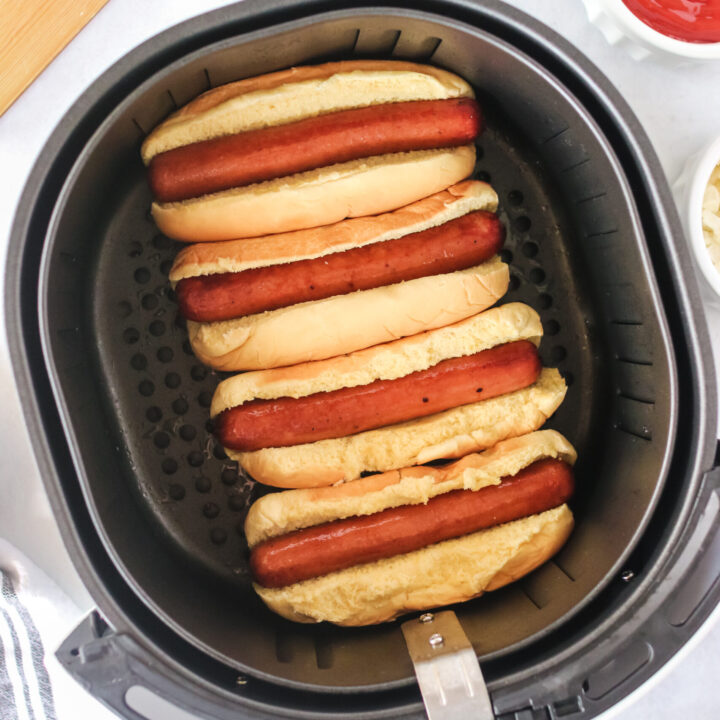

Air Fryer Hot Dogs

Simple, Delicious Air-Fried Hot Dogs
Hot dogs are a classic dish, be it for a game day snack or a protein-rich lunch or dinner.
Using an air fryer to prepare hot dogs can emulate that freshly grilled-to-perfection taste!
Ingredients
- Hot dogs or sausages
- Hot dog buns
- Condiments (ketchup, mustard, relish, etc.)
Steps
- Preheat the air fryer to 400 degrees F.
- Place desired amount of buns in a single layer of the air fryer and allow to toast, and then remove.
- Place the desired amount of hot dogs in a single layer of the air fryer and cook until desired crispiness to reached. Allow to cook for ~3 minutes and then monitor for desired crispiness.
- Remove hot dogs from air fryer and place in the toasted buns. Add desired condiments and serve.